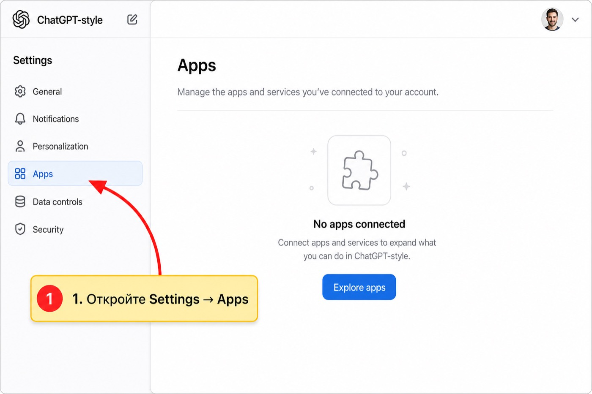
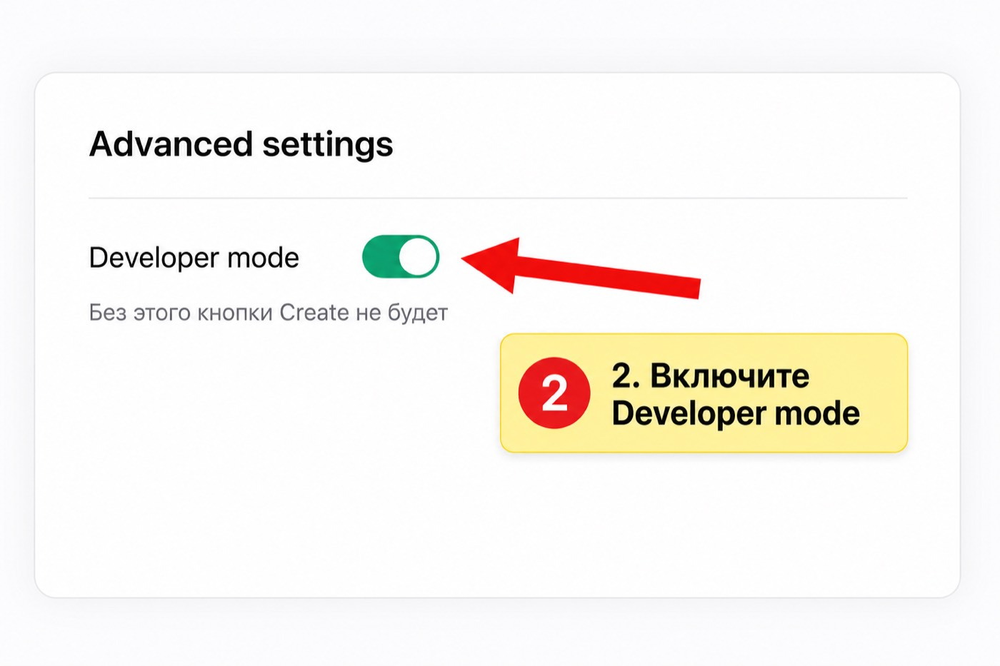
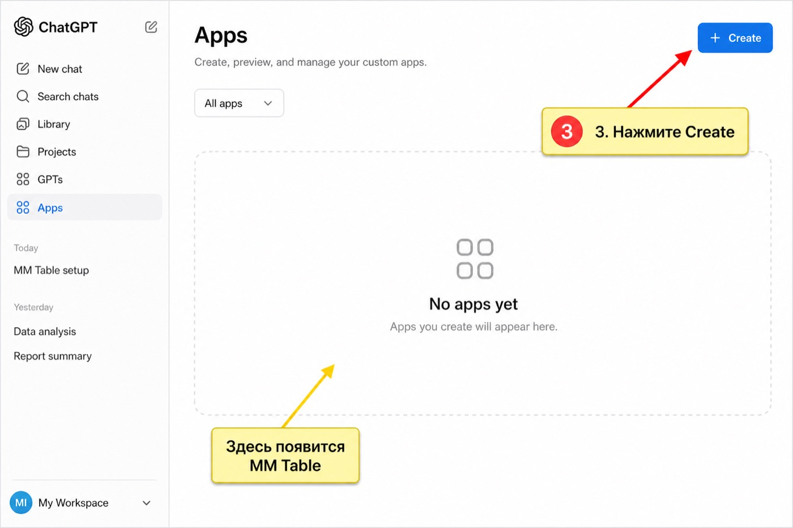
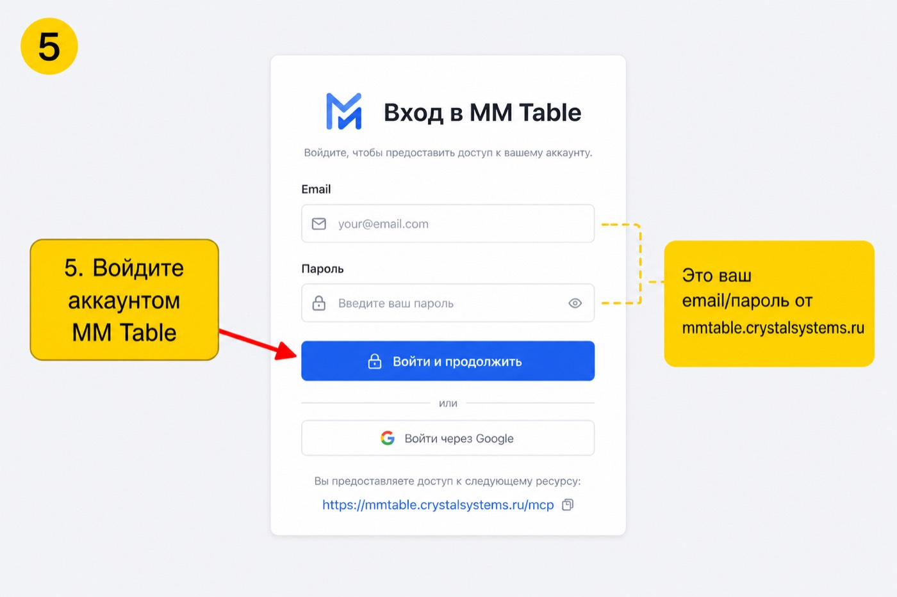
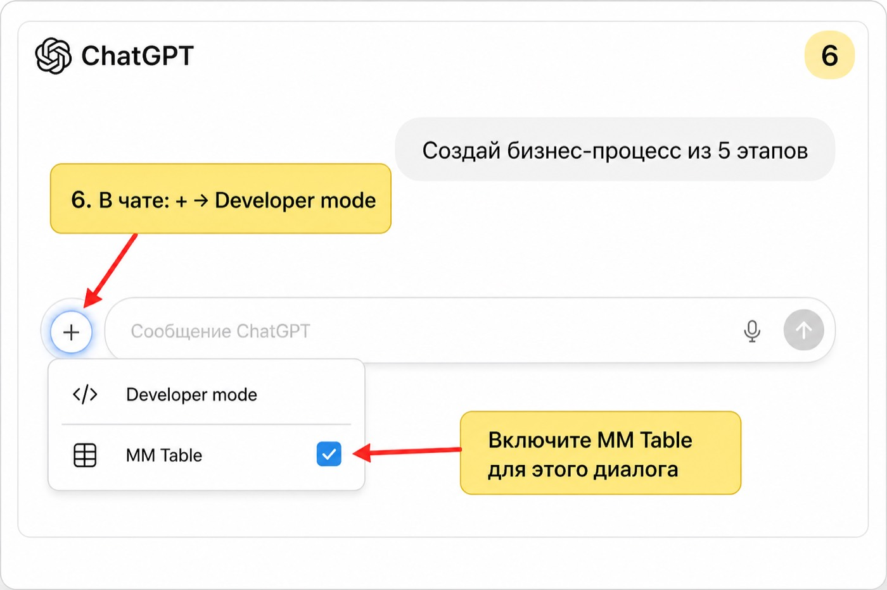

Подключить MM Table к ChatGPT
Инструкция со скриншотами: стрелки и подсказки на картинках показывают, куда нажимать.
https://mmtable.crystalsystems.ru/mcp
Нужен платный ChatGPT и Developer mode.
В UI названия могут быть Apps / Connectors / Plugins — смысл один.
Auth выбирайте OAuth, не API key.
1 Settings → Apps
- Откройте chatgpt.com
- Аватар → Settings
- Слева выберите Apps

2 Включите Developer mode
- Откройте Advanced settings
- Включите переключатель Developer mode

3 Нажмите Create
- Вернитесь к списку Apps
- Нажмите Create

5 Войдите в MM Table
- Откроется страница OAuth MM Table
- Введите email/пароль от mmtable.crystalsystems.ru
- Нажмите Войти и продолжить / Разрешить

6 Включите в чате
- В диалоге нажмите +
- Выберите Developer mode
- Включите MM Table
- Напишите: «Создай бизнес-процесс из 5 этапов…»
